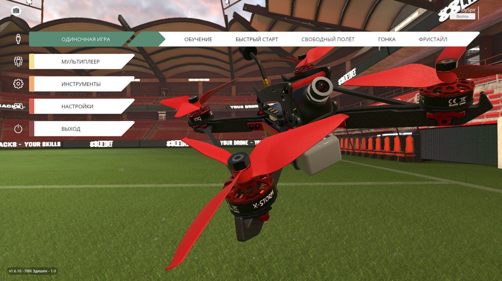
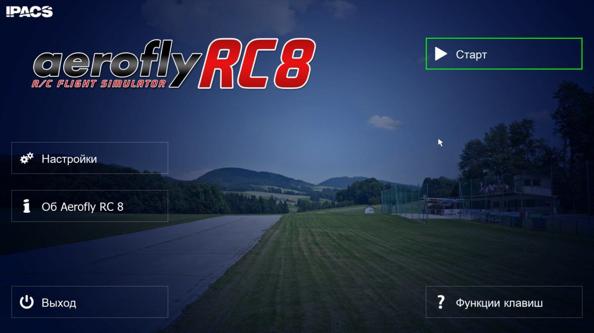

FPV-ИГРА
для пультов на
.
ℹ️ Тренирует пальцы и мозг.
📎
Распаковать архив, загрузить в корневую папку на SD-карту пульта.
➡️ Запуск игры:
- нажать кнопку SYS,
- барабаном найти Game-Breakout,
- нажатием на барабан запустить.
#игры_симуляторы
#прошивка_пульта_edgetx
Это вложение из поста t.me/platforma_fpv/590/592
Игра для пульта на EdgeTX.
Распаковать архив, загрузить в корневую папку на SD-карту пульта.
Запуск:
- нажать кнопку SYS,
- барабаном найти Game-Breakout,
- нажатием на барабан запустить.
📝
FPV-ИГРА
для пультов на
.
ℹ️ Тренирует пальцы и мозг.
📎
Распаковать архив, загрузить в корневую папку на SD-карту пульта.
➡️ Запуск игры:
- нажать кнопку SYS,
- барабаном найти Game-Breakout,
- нажатием на барабан запустить.
#игры_симуляторы
#прошивка_пульта_edgetx
Это вложение из поста t.me/platforma_fpv/590/592

ARMA 3
Представляет собой симулятор боевых действий.
Не имеет аналогов в своем жанре. Игра создана с упором на реализм боев. Нет линеек жизни и брони - противника можно поразить с одного выстрела.
В игре представлено более 20 видов военной технике и 40 оружия.
Поле боя представляет открытый мир площадью 290 км2, с разнообразным ландшафтом от пустыни до городских застроек.
📎
Непроверенная внешняя ссылка
АРМА 3 СКАЧАТЬ АРХИВЫ
АРМА 3 СКАЧАТЬ АРХИВЫ
⚠️ На компьютере изначально должно быть не менее 350 Gb свободного места. т.е. 150 Gb под архивы, и еще 150 Gb под распаковку.
* После распаковки, скачанные архивы можно
удалить для освобождения места
Как скачать симулятор: 2 варианта
1. Скачать архивы (ссылка выше)
- скачать из папки ВСЕ файлы .z0Х (Х - число от 1 до 999) + файл .zip (все файл будут иметь название, кроме расширения) в ОДНУ папку на компьютере
- после скачивания, нажать правой кнопкой и с помощью любого архиватора (WinRAR, 7zip, встроенный) распаковать в текущую папку
- после распаковки необходимо установить - порядок установки в инструкции "Порядок установки".
2. Скачать через торрент
- установить программу µTorrent
- из папки с симулятором скачать файл .torrent
- запустить, выбрать место для скачивания, дождаться загрузки
⏭️
Порядок установки
1. Смонтировать образ в виртуальный привод.
2. Запустить установщик Setup.exe.
3. Следовать инструкциям установщика.
4. Установить галочку о копировании лекарства в установщике Rune, или скопировать содержимое
папки Rune с образа в папку с установленной игрой.
5. Запустить игру, если устанавливаете игру на системный диск - надо запускать игру от имени
администратора.
6. При первом запуске, при попытке игры выйти в сеть, ответить
Отмена
, или заблокировать игру в
брандмауэре.
7. Играть
📎
Непроверенная внешняя ссылка
АРМА 3 СКАЧАТЬ АРХИВЫ
АРМА 3 СКАЧАТЬ АРХИВЫ
⚠️ На компьютере изначально должно быть не менее 350 Gb свободного места. т.е. 150 Gb под архивы, и еще 150 Gb под распаковку.
* После распаковки, скачанные архивы можно
удалить для освобождения места
Дополнение к симулятору "АРМА 3"
📎
#игры_симуляторы
#для_windows
Это вложение из поста t.me/platforma_fpv/590/885

FPV drone Crocus - мод для ARMA 3
ℹ️ Добавляет в "
" два ударных FPV-дрона:
- с кумулятивным БП,
- с термобарическим БП.
📎
Установка мода:
- скачать архив на компьютер, в любое место,
- распаковать,
- запустить лаунчер Arma 3.
- выбрать в боков меню раздел "
МОДЫ
",
- в верхнем меню, выбрать "
локальный мод
",
- указать путь к распакованному архиву,
- снизу на зеленом поле нажать нажать на "
загрузить мод
",
- появиться сообщение - мод установлен.
Чтобы убедиться, что мод установлен:
- перейти в раздел "МОДЫ"
- в списке будет отображаться мод и название "
FPV drone Crocus
", статус -
готов
#игры_симуляторы
#для_windows
Это вложение из поста t.me/platforma_fpv/590/1025

Симулятор Liftoff
.
Версия 1.5.11
ℹ️ Liftoff - самый массовый и основной симулятор. Необходим для приобретения первоначальных навыков пилотирования на FPV-дроне.
- симуляторы для поддержания и приобретения более насыщенного навыка пилотирования.
📎
Непроверенная внешняя ссылка
СКАЧАТЬ СИМУЛЯТОР LIFTOFF
СКАЧАТЬ СИМУЛЯТОР LIFTOFF
(17.7 ГБ)
🖥
Как скачать и установить симулятор Liftoff
1. Скачать из папки все файлы .z0Х (Х - число от 1 до 99) + файл .zip (все файл будут иметь название, кроме расширения) в одну папку на компьютере.
2. После скачивания, нажать правой кнопкой на файл с расширением .zip и с помощью любого архиватора (WinRAR, 7zip, встроенный) - распаковать в текущую папку.
3. После окончания процесса разархивации, открываем распакованную папку и запускаем симулятор с помощью файла
Liftoff.exe
(если симулятор запустится нормально, то скачанные архивы можно удалить, чтобы не занимали лишнего места на компьютере).
📝 Стабильный, медленный, управляемый полет - необходимый навык оператора ударного дрона.
На первоначальном этапе рекомендуем отрабатывать его на трассе Minus Two симулятора Liftoff, скорость полёта не должна превышать 5-6 км/ч, задевания элементов трассы не допустимы (смотрите видео).
Тренируйтесь грамотно.
#игры_симуляторы
#обучение
#FPV
#симулятор
Это вложение из поста t.me/platforma_fpv/590/1212

Симулятор Liftoff 1.6.10 ПВХ-Эдишен от ЦБР
лючевые особенности симулятора:
- Собран с нуля на основе оригинального дистрибутива версии 1.6.10.
- Полностью русифицирован.
- Удалены символика Украины, компании Lugus Studios, открыто поддерживающей нацистский режим, и ее спонсоров.
- Полностью заблокирован выход приложения в сеть.
- В разы ускорен запуск приложения.
- Улучшено общее быстродействие, даже на слабых компьютерах.
- По отзывам тестировщиков, в лучшую сторону изменилась физика симулятора.
- Добавился новый уровень "Rustline" ("Промзона"), позволяющий отрабатывать выполнение задач в условиях промышленной застройки.
- Собственный инсталлятор.
Установка:
Установка осуществляется классическим путем, при помощи инсталлятора.
Инсталлятор, кроме собственно развертывания приложения, позволяет выбрать отображаемое имя пользователя и папку для установки.
Удаление программы производится также исключительно классическим путем
, "Настройки Windows — Установленные приложения — Удалить"
(удаление "по старинке" только папки с приложением приведет к проблемам, как и в случае с любой другой нормальной установленной программой).
Во избежание конфликтов настроек разных версий, при установке все старые данные Лифтофф, хранящиеся на компьютере, предварительно удаляются (они хранятся не только в папке с приложением).
Размер
Установочные файлы: 20.3 Gb
Место под установку сима: 23.7 Gb
📎
Непроверенная внешняя ссылка
Скачать Liftoff 1.6.10 ПВХ-Эдишен с ЯндексДиска
Скачать Liftoff 1.6.10 ПВХ-Эдишен с ЯндексДиска
Скачивать можно как целиком (требует установленного приложения Яндекс Диск), так и отдельными файлами, в этом случае Яндекс Диск не требуется.
🖥
Как скачать и установить симулятор Liftoff с ЯндексДиска
1. Скачать из папки все файлы .z0Х (Х - число от 1 до 99) + файл .zip (все файл будут иметь название, кроме расширения) в одну папку на компьютере.
2. После скачивания, нажать правой кнопкой на файл с расширением .zip и с помощью любого архиватора (WinRAR, 7zip, встроенный) - распаковать в текущую папку.
3. Запустить установку с помощью
install.exe
, указать имя пользователя, папку установки, поставить галку "создать ярлык на рабочем столе".
4. Запускается с ярлыка на рабочем столе, или через файл
Liftoff.exe
в папке установки.
📎
Как скачать и установить симулятор Liftoff с Торрента
1. Скачать торрент-файл и запустить с помощью программы µTorrent, указать папку скачивания.
2. После успешного скачивания, открыть папку, куда скачали симулятор, и запустить установку с помощью
install.exe
, указать имя пользователя, папку установки, поставить галку "создать ярлык на рабочем столе".
3. Запускается с ярлыка на рабочем столе, или через файл
Liftoff.exe
в папке установки.
#игры_симуляторы
#обучение
#FPV
#симулятор
Это вложение из поста t.me/platforma_fpv/590/1471

Симулятор Uncrashed.
- симуляторы для поддержания и приобретения более насыщенного навыка пилотирования.
- самый массовый и основной симулятор. Необходим для приобретения первоначальных навыков пилотирования на FPV-дроне.
📎
Непроверенная внешняя ссылка
СКАЧАТЬ СИМУЛЯТОР UNCRASHED
СКАЧАТЬ СИМУЛЯТОР UNCRASHED
(16.1 ГБ)
🖥
Как скачать и установить симулятор Uncrashed.
1. Скачать из папки все файлы .z0Х (Х - число от 1 до 99) + файл .zip (все файл будут иметь название, кроме расширения) в одну папку на компьютере.
2. После скачивания, нажать правой кнопкой на файл с расширением .zip и с помощью любого архиватора (WinRAR, 7zip, встроенный) - распаковать в текущую папку.
3. После окончания процесса разархивации, открываем распакованную папку и запускаем симулятор с помощью файла
Uncrashed.exe
(если симулятор запустится нормально, то скачанные архивы можно удалить, чтобы не занимали лишнего места на компьютере).
Видео от подписчика.
Трасса "Город будущего". Время: 32 секунды (00:32:849)
побит!
Кто обойдет этот рекорд, присылайте видео прохода трассы.
#игры_симуляторы
#обучение
#FPV
#симулятор
Это вложение из поста t.me/platforma_fpv/590/1213

Симулятор Velocidrone
- симуляторы для поддержания и приобретения более насыщенного навыка пилотирования.
- самый массовый и основной симулятор. Необходим для приобретения первоначальных навыков пилотирования на FPV-дроне.
📎
Непроверенная внешняя ссылка
СКАЧАТЬ СИМУЛЯТОР VELCIODRONE
СКАЧАТЬ СИМУЛЯТОР VELCIODRONE
(15.8 ГБ)
🖥
Как скачать и установить симулятор Velocidrone.
1. Скачать из папки все файлы .z0Х (Х - число от 1 до 99) + файл .zip (все файл будут иметь название, кроме расширения) в одну папку на компьютере.
2. После скачивания, нажать правой кнопкой на файл с расширением .zip и с помощью любого архиватора (WinRAR, 7zip, встроенный) - распаковать в текущую папку.
3. После распаковки запускается с файла
Launcher64.exe
Важно
. На пути к папке не должно быть кириллицы.
2. Снять с папки галку "Только чтение".
3. Добавить папку в исключения в антивирусе.
#игры_симуляторы
#обучение
#FPV
#симулятор
Это вложение из поста t.me/platforma_fpv/590/1214

Симулятор AeroFly
.
ℹ️ Симулятор для приобретения первоначальных навыков пилотирования на бпла самолетного типа.
📎
Непроверенная внешняя ссылка
Скачать АeroFly RC 8
Скачать АeroFly RC 8
Как скачать и установить симулятор AeroFly
1. Скачать из папки все файлы .z0Х (Х - число от 1 до 99) + файл .zip (все файл будут иметь название, кроме расширения) в одну папку на компьютере.
2. После скачивания, нажать правой кнопкой на файл с расширением .zip и с помощью любого архиватора (WinRAR, 7zip, встроенный) - распаковать в текущую папку.
3. После распаковки монтируем полученный файл
sr-aeroflyrc8.iso
в виртуальный cd-rom (в Windows 10 b 11 он встроенный, для других ОС можно использовать daemon tools).
4. Открываем виртуальный cd-rom и запускаем установку симулятора файлом
setup.exe
.
5. В открывшемся окне выбираем место установки, ставим все 3-ри галочки (Apply Crack, Create Desktop Shortcut , Create Uninstaller) и нажимаем кнопку
INSTAL GAME
.
6. По окончанию процесса установки, на рабочем слое появиться ярлык
AeroFly RC 8
, с него и запускаем симулятор.
#игры_симуляторы
#обучение
#бпла_самолетного_типа
#симулятор
Это вложение из поста t.me/platforma_fpv/590/1215
Бесплатный российский симулятор-тренажер «Академия дронов» для юных пилотов.
Сочетает реалистичную физику полёта на fpv коптере с захватывающими заданиями.
✔️ Контент подходит школьникам
до 16 лет
и старше.
ℹ️ СЮЖЕТ
На экзопланету Кинерма высадились медведи-первопроходцы с Берлоги. Их цель — исследовать ландшафт, флору и фауну, чтобы создать здесь передовую научную станцию. Вы - оператор квадрокоптера, которому доверяют самые ответственные миссии: от аэрофотосъёмки до доставки хрупких грузов через экстремальные условия. Какие ещё трудности вам уготовит Кинерма?
✔️ 14 уникальных миссий, включая гонки, спасательные операции и исследовательские задания.
Юный пилот!
Ты - оператор квадрокоптера, которому доверяют самые ответственные миссии: от аэрофотосъёмки до доставки хрупких грузов через экстремальные условия. Какие ещё трудности тебе уготовит Кинерма?
Играй за Стажёра, прибывшего на Кинерму с научной экспедицией. Помогай команде исследовать местность, добывать образцы и разыскивать объекты. Тренируйся по реалистичным сценариям в завораживающих локациях новой экзопланеты.
Особенности симулятора.
1. Бесплатный.
2. Не требует установки, скачивается архив, распаковывается и запускается .exe файл.
3. По-настоящему детский симулятор - выполнен в мультяшном стиле.
4. Есть тренировки, есть режим сценария.
5. Поддерживает пульты на OpenTX/EdgeTX:
- Radiomaster Boxer
- Radiomaster zorro
- Radiomaster Pocket
- Radiomaster TX12
- Radiomaster TX16
- Jumper T20
- Jumper T-Pro V2
- Jumper t-lite
- Jumper bumblebee
- iFlight Commando8
- Frsky Taranis X-lite
- Frsky Taranis X-lite pro
- Frsky Q X7
6. Занимает
мало места
на компьютере:
- архив для скачивания - 350 Мб,
- распакованная папка - 510 Мб.
7. Работает на Windows.
Непроверенная внешняя ссылка
📎 Играть через VK Play
📎 Играть через VK Play
Непроверенная внешняя ссылка
Играть через Steam
Играть через Steam
Непроверенная внешняя ссылка
Скачать на Windows buhe (файлы.exe
Скачать на Windows buhe (файлы.exe
#игры_симуляторы
#обучение_дети
#обучение
#FPV
#симулятор
Это вложение из поста t.me/platforma_fpv/590/1564
#ИГРЫ_СИМУЛЯТОРЫ
на пульт;
-
Веб-страница создана автоматически на основе поста пользователя ПЛАТФОРМА_FPV